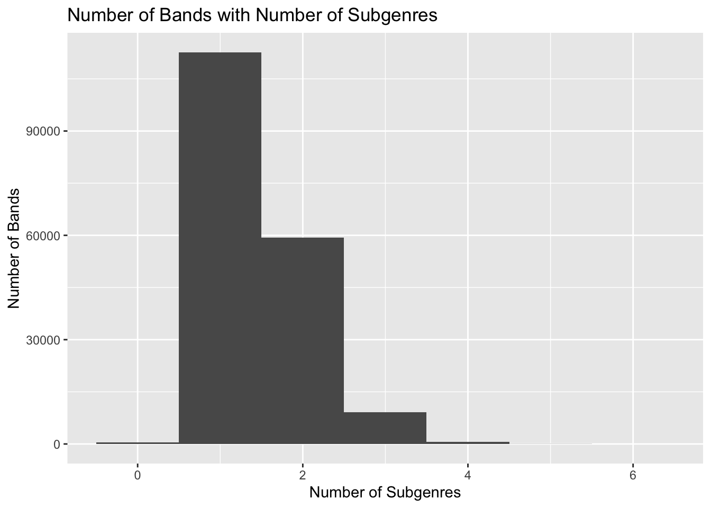
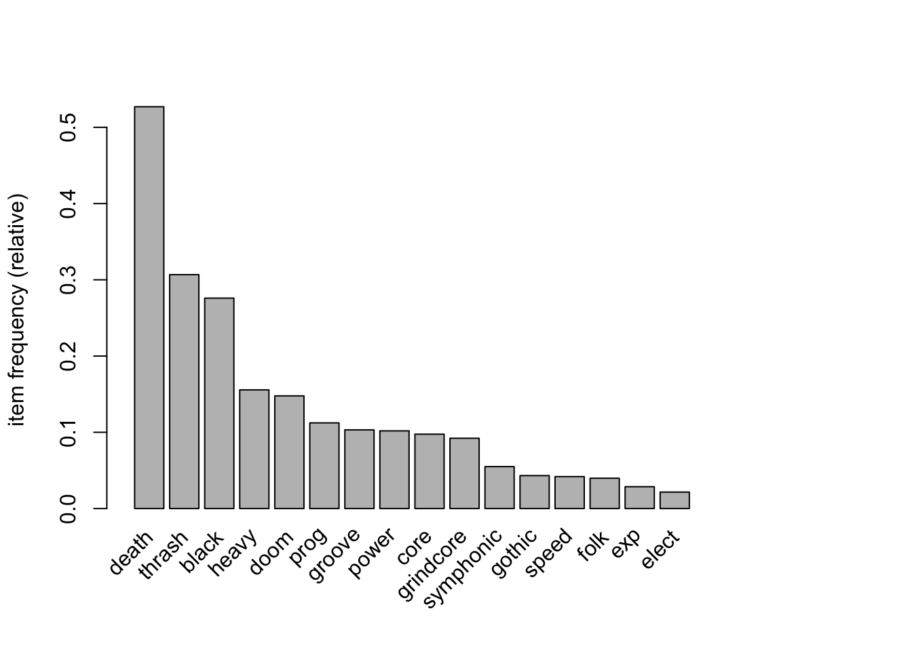
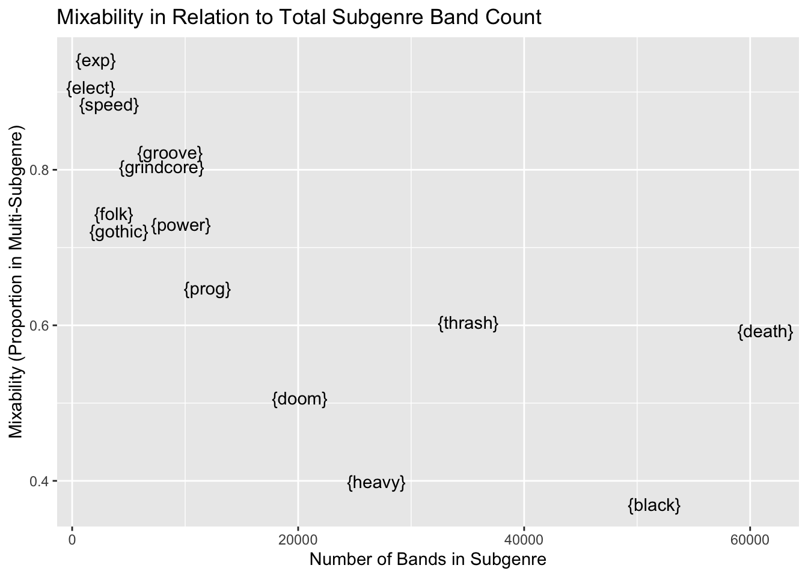

# load necessary packages
library(tidyverse)
library(RSQLite)
library(knitr)
library(ggplot2)
library(arules)Metal Subgenre Market Basket Analysis in R
TL;DR
The analyses in this report analyzed commonly co-occurring Metal subgenres in Metal bands using Market Basket Analysis techniques.
Bands were scraped from Encyclopaedia Metallum and assigned binary values to each basic subgenre from the website. Only bands that were classified as having multiple subgenres were examined here.
Death (52.7%), Thrash (30.7%), and Black Metal (27.6%) were the most common subgenres in multi-subgenre bands. More common subgenres tended to have a lower percentage of multi-subgenre bands (e.g., Black Metal: 37.0%; Heavy Metal: 39.9%), whereas less common subgenres tended to have a higher percentage of multi-subgenre bands (e.g., Experimental/Avant-garde Metal: 94.2%; Electronic/Industrial Metal: 90.6%). Among multi-subgenre bands, 89.9% of Grindcore bands were also categorized as Death Metal, 74.4% of Metalcore/Deathcore bands were also categorized as Death Metal, and 63.5% of Folk/Viking/Pagan Metal bands were also categorized as Black Metal. The subgenre pairings that occurred at least 1.5x more frequently than expected included Power and Heavy Metal, Gothic and Doom Metal, Folk/Viking/Pagan and Black Metal, Grindcore and Death Metal, and Speed and Thrash Metal.
These subgenres pairings represent commonly co-occurring Metal subgenres, and each pairing can be explained within the developmental context of Metal music. Further analyses can expand on those conducted here by examining more specific subgenres or including more contextual information regarding the band’s use of a given subgenre.
Background
Metal music is composed of subgenres, which represent common subtypes of Metal. Many bands evolve into different subgenres across releases, or will take influence from multiple subgenres at once. Since bands occupying multiple subgenres is not uncommon, I wanted to analyze metal band data to see which subgenres frequently occurred together. The implication for commonly co-occurring subgenres is that these subgenres “blend” well together, or are comprised of similar influences or musical components.
I tested this using Market Basket Analysis (MBA), which is a technique frequently used in commercial settings to analyze item associations across transactions. For a good primer on the topic and metric interpretation, I recommend reading Market Basket Analysis 101: Key Concepts from Currie Sivek (2020). In my use case, subgenres were used in place of items and bands in place of transactions. These analyses used the arules package (Hahsler et al., 2023), and I followed along with the corresponding tutorial to apply these functions to my use case (Hahsler, 2024).
The data used in these analyses was scraped from Encyclopaedia Metallum and processed within the metallum_bands.db SQLite database. Text strings from each band’s original Genre entry were extracted to compared to a list of fifteen basic genres provided by the website (see metallum_web_scraping.qmd for more details). These Metal subgenres are included Black, Death, Doom/Stoner/Sludge, Electronic/Industrial, Experimental/Avant-garde, Folk/Viking/Pagan, Gothic, Grindcore, Groove, Heavy, Metalcore/Deathcore, Power, Progressive, Speed, Symphonic, and Thrash Metal. These analyses were meant to characterize associations between the broader, overarching subgenres, and further analyses can expand findings here by analyzing subgenres with greater specificity.
Load Packages and Data
Following the loading of necessary packages and setting of options, the variable con was set to represent the connection to database metallum_bands.db. The data from this table was extracted into the tibble te_metal_bands_df.
# set global option to 3 digits to keep outputs from overflowing
options(digits=3)# set con equal to SQLite database metallum_bands.db
con <- dbConnect(RSQLite::SQLite(), 'metallum_bands.db')# extract the table dc_processed genres as a tibble and get basic info
te_metal_bands_df <- dbGetQuery(con, 'SELECT * FROM dc_processed_genres') %>%
as_tibble()
str(te_metal_bands_df)tibble [182,105 × 22] (S3: tbl_df/tbl/data.frame)
$ band_id : int [1:182105] 0 1 2 3 4 5 6 7 8 9 ...
$ band_name : chr [1:182105] "A // Solution" "A 12 Gauge Tragedy" "A Balance of Power" "A Band Named Jon" ...
$ country : chr [1:182105] "United States" "United States" "United States" "United States" ...
$ genre : chr [1:182105] "Crust Punk/Thrash Metal" "Deathcore" "Melodic Death Metal/Metalcore" "Brutal Death Metal/Grindcore" ...
$ status : chr [1:182105] "Split-up" "Split-up" "Active" "Active" ...
$ black : int [1:182105] 0 0 0 0 0 0 1 0 0 1 ...
$ death : int [1:182105] 0 1 1 1 1 0 0 1 1 0 ...
$ doom : int [1:182105] 0 0 0 0 0 0 0 0 0 0 ...
$ electronic_industrial: int [1:182105] 0 0 0 0 0 0 0 0 0 0 ...
$ experimental : int [1:182105] 0 0 0 0 0 0 0 0 0 0 ...
$ folk : int [1:182105] 0 0 0 0 0 0 0 0 0 0 ...
$ gothic : int [1:182105] 0 0 0 0 0 0 0 0 0 0 ...
$ grindcore : int [1:182105] 0 0 0 1 0 0 0 0 0 0 ...
$ groove : int [1:182105] 0 0 0 0 0 0 0 0 1 0 ...
$ heavy : int [1:182105] 0 0 0 0 0 0 0 0 0 0 ...
$ metalcore_deathcore : int [1:182105] 0 1 1 0 0 0 0 1 1 0 ...
$ power : int [1:182105] 0 0 0 0 0 1 0 0 0 0 ...
$ progressive : int [1:182105] 0 0 0 0 0 1 0 0 0 0 ...
$ speed : int [1:182105] 0 0 0 0 0 0 0 0 0 0 ...
$ symphonic : int [1:182105] 0 0 0 0 0 0 0 0 0 0 ...
$ thrash : int [1:182105] 1 0 0 0 1 0 0 0 0 0 ...
$ total_subgenres : int [1:182105] 1 2 2 2 2 2 1 2 3 1 ...Initial Data Wrangling and Transaction Setup
Columns pertaining to subgenres were binary (0/1), denoting absence or presence of subgenre for each band, respectively. While the majority of bands belonged to one subgenre, a considerable amount had two or more. Following the removal of bands with fewer than two subgenres, nearly 70,000 multi-subgenre bands remained. The average number of subgenres for this subgroup was 2.15, indicating a smaller proportion of bands with three to six subgenres. The object trans_bands was used to convert the binary subgenre variables to logical (TRUE/FALSE) and store each band as a transaction with subgenres as items. The summary and plot depict the relative frequencies of each subgenre, with Death (36,395), Thrash (21,187), and Black Metal (19,060) as the most common subgenres.
# shorten the longer names for easier plotting and outputs
long_subs <- c(elect = 'electronic_industrial',
exp = 'experimental',
core = 'metalcore_deathcore',
prog = 'progressive')
te_metal_bands_df <- te_metal_bands_df %>%
rename(all_of(long_subs))
str(te_metal_bands_df)tibble [182,105 × 22] (S3: tbl_df/tbl/data.frame)
$ band_id : int [1:182105] 0 1 2 3 4 5 6 7 8 9 ...
$ band_name : chr [1:182105] "A // Solution" "A 12 Gauge Tragedy" "A Balance of Power" "A Band Named Jon" ...
$ country : chr [1:182105] "United States" "United States" "United States" "United States" ...
$ genre : chr [1:182105] "Crust Punk/Thrash Metal" "Deathcore" "Melodic Death Metal/Metalcore" "Brutal Death Metal/Grindcore" ...
$ status : chr [1:182105] "Split-up" "Split-up" "Active" "Active" ...
$ black : int [1:182105] 0 0 0 0 0 0 1 0 0 1 ...
$ death : int [1:182105] 0 1 1 1 1 0 0 1 1 0 ...
$ doom : int [1:182105] 0 0 0 0 0 0 0 0 0 0 ...
$ elect : int [1:182105] 0 0 0 0 0 0 0 0 0 0 ...
$ exp : int [1:182105] 0 0 0 0 0 0 0 0 0 0 ...
$ folk : int [1:182105] 0 0 0 0 0 0 0 0 0 0 ...
$ gothic : int [1:182105] 0 0 0 0 0 0 0 0 0 0 ...
$ grindcore : int [1:182105] 0 0 0 1 0 0 0 0 0 0 ...
$ groove : int [1:182105] 0 0 0 0 0 0 0 0 1 0 ...
$ heavy : int [1:182105] 0 0 0 0 0 0 0 0 0 0 ...
$ core : int [1:182105] 0 1 1 0 0 0 0 1 1 0 ...
$ power : int [1:182105] 0 0 0 0 0 1 0 0 0 0 ...
$ prog : int [1:182105] 0 0 0 0 0 1 0 0 0 0 ...
$ speed : int [1:182105] 0 0 0 0 0 0 0 0 0 0 ...
$ symphonic : int [1:182105] 0 0 0 0 0 0 0 0 0 0 ...
$ thrash : int [1:182105] 1 0 0 0 1 0 0 0 0 0 ...
$ total_subgenres: int [1:182105] 1 2 2 2 2 2 1 2 3 1 ...# get distribution for total_subgenres
ggplot(te_metal_bands_df, aes(x=total_subgenres)) +
geom_histogram(binwidth=1) +
labs(title='Number of Bands with Number of Subgenres',
x='Number of Subgenres',
y='Number of Bands')
# remove bands with 0 or 1 subgenre
ref_te_metal_bands_df <- te_metal_bands_df %>%
filter(total_subgenres > 1)
str(ref_te_metal_bands_df)tibble [69,067 × 22] (S3: tbl_df/tbl/data.frame)
$ band_id : int [1:69067] 1 2 3 4 5 7 8 10 15 17 ...
$ band_name : chr [1:69067] "A 12 Gauge Tragedy" "A Balance of Power" "A Band Named Jon" "A Band of Orcs" ...
$ country : chr [1:69067] "United States" "United States" "United States" "United States" ...
$ genre : chr [1:69067] "Deathcore" "Melodic Death Metal/Metalcore" "Brutal Death Metal/Grindcore" "Death/Thrash Metal" ...
$ status : chr [1:69067] "Split-up" "Active" "Active" "Active" ...
$ black : int [1:69067] 0 0 0 0 0 0 0 0 0 0 ...
$ death : int [1:69067] 1 1 1 1 0 1 1 0 1 1 ...
$ doom : int [1:69067] 0 0 0 0 0 0 0 1 0 0 ...
$ elect : int [1:69067] 0 0 0 0 0 0 0 0 0 0 ...
$ exp : int [1:69067] 0 0 0 0 0 0 0 0 0 0 ...
$ folk : int [1:69067] 0 0 0 0 0 0 0 0 0 0 ...
$ gothic : int [1:69067] 0 0 0 0 0 0 0 0 0 0 ...
$ grindcore : int [1:69067] 0 0 1 0 0 0 0 0 0 0 ...
$ groove : int [1:69067] 0 0 0 0 0 0 1 0 0 1 ...
$ heavy : int [1:69067] 0 0 0 0 0 0 0 1 0 0 ...
$ core : int [1:69067] 1 1 0 0 0 1 1 0 1 0 ...
$ power : int [1:69067] 0 0 0 0 1 0 0 0 0 0 ...
$ prog : int [1:69067] 0 0 0 0 1 0 0 0 0 0 ...
$ speed : int [1:69067] 0 0 0 0 0 0 0 0 0 0 ...
$ symphonic : int [1:69067] 0 0 0 0 0 0 0 0 0 0 ...
$ thrash : int [1:69067] 0 0 0 1 0 0 0 0 0 0 ...
$ total_subgenres: int [1:69067] 2 2 2 2 2 2 3 2 2 2 ...# get mean number of subgenres among those with multiple
subgenres_per_multi_bands <- mean(ref_te_metal_bands_df$total_subgenres)
subgenres_per_multi_bands[1] 2.15# setup transactions object from arules for subgenre columns
trans_bands <- ref_te_metal_bands_df %>%
select(black:thrash) %>%
# convert from binary to logical
mutate_all(as.logical) %>%
transactions()# get basic summary
summary(trans_bands)transactions as itemMatrix in sparse format with
69067 rows (elements/itemsets/transactions) and
16 columns (items) and a density of 0.134
most frequent items:
death thrash black heavy doom (Other)
36395 21187 19060 10750 10205 50910
element (itemset/transaction) length distribution:
sizes
2 3 4 5 6
59353 9092 586 35 1
Min. 1st Qu. Median Mean 3rd Qu. Max.
2.00 2.00 2.00 2.15 2.00 6.00
includes extended item information - examples:
labels variables levels
1 black black TRUE
2 death death TRUE
3 doom doom TRUE
includes extended transaction information - examples:
transactionID
1 1
2 2
3 3# show plot of each subgenre's relative frequency
itemFrequencyPlot(trans_bands, topN=20)
Support
Support represents the proportion of the records in a set of items containing an item or combination of items, as depicted in the equation below:
\[ Support = \frac{Count(A)}{Count(All)} \]
The threshold for support was set to 0.015, which is the proportion roughly equal to 1,000 bands in the multi-subgenre subset. The table for single subgenres reiterates the frequency plot from the previous section, with Death (52.7%), Thrash (30.7%), and Black Metal (27.6%) comprising a large proportion of the total bands. With a fairly liberal support threshold, 22 multi-subgenre combinations had 1,000 bands or more. Two immediate standouts included Death-Thrash and Blackened Death Metal, with both comprising roughly 14% of observations in the item set (14.1% and 14.0%, respectively).
# create apriori rules object for occurrences with support > 0.015
support_rules <- trans_bands %>%
apriori(parameter=list(target='frequent', support=0.015))Apriori
Parameter specification:
confidence minval smax arem aval originalSupport maxtime support minlen
NA 0.1 1 none FALSE TRUE 5 0.015 1
maxlen target ext
10 frequent itemsets TRUE
Algorithmic control:
filter tree heap memopt load sort verbose
0.1 TRUE TRUE FALSE TRUE 2 TRUE
Absolute minimum support count: 1036
set item appearances ...[0 item(s)] done [0.00s].
set transactions ...[16 item(s), 69067 transaction(s)] done [0.00s].
sorting and recoding items ... [16 item(s)] done [0.00s].
creating transaction tree ... done [0.01s].
checking subsets of size 1 2 3 done [0.00s].
sorting transactions ... done [0.01s].
writing ... [38 set(s)] done [0.00s].
creating S4 object ... done [0.00s].# create subset for single subgenres
single_item_support <- subset(support_rules, size(items) == 1)# create subset for multiple subgenres
multi_item_support <- subset(support_rules, size(items) > 1)# sort and display the single subgenre support metrics
single_item_support_sorted <- sort(single_item_support, by='support') %>%
head(n=20) %>%
inspect() items support count
[1] {death} 0.5270 36395
[2] {thrash} 0.3068 21187
[3] {black} 0.2760 19060
[4] {heavy} 0.1556 10750
[5] {doom} 0.1478 10205
[6] {prog} 0.1123 7759
[7] {groove} 0.1032 7127
[8] {power} 0.1019 7035
[9] {core} 0.0975 6735
[10] {grindcore} 0.0922 6366
[11] {symphonic} 0.0550 3797
[12] {gothic} 0.0432 2983
[13] {speed} 0.0419 2892
[14] {folk} 0.0397 2745
[15] {exp} 0.0287 1979
[16] {elect} 0.0216 1492# sort and display the multiple subgenre support metrics
multi_item_support_sorted <- sort(multi_item_support, by='support') %>%
head(n=25) %>%
inspect() items support count
[1] {death, thrash} 0.1414 9766
[2] {black, death} 0.1397 9650
[3] {death, grindcore} 0.0829 5724
[4] {death, core} 0.0725 5009
[5] {death, doom} 0.0597 4125
[6] {heavy, thrash} 0.0502 3466
[7] {heavy, power} 0.0477 3294
[8] {groove, thrash} 0.0443 3060
[9] {black, thrash} 0.0433 2991
[10] {death, prog} 0.0402 2774
[11] {black, doom} 0.0368 2540
[12] {death, groove} 0.0284 1959
[13] {black, folk} 0.0252 1743
[14] {black, symphonic} 0.0218 1507
[15] {power, prog} 0.0197 1360
[16] {speed, thrash} 0.0196 1357
[17] {heavy, prog} 0.0188 1297
[18] {power, thrash} 0.0177 1221
[19] {prog, thrash} 0.0167 1154
[20] {doom, gothic} 0.0165 1139
[21] {doom, heavy} 0.0161 1114
[22] {groove, core} 0.0158 1094 Mixability
Next, I wanted to compare the proportion of bands featuring multiple subgenres across subgenres. To do this, I created a transactions object from the original data, which included all bands, regardless of how many subgenres each had. Then I extracted the support metrics from all bands and the bands with multiple subgenres, and joined these two dataframes into a single dataframe (comparison_support_df). I computed a new variable, mixability, as the proportion of each subgenre’s observations in which the subgenre was one of two or more:
\[ Mixability_{Subgenre} = P(2+ Subgenres) = \frac{Count(Subgenre|2+ Subgenres)}{Count(Subgenre)} \]
# create transactions object for all bands regardless of subgenre number
all_trans_bands <- te_metal_bands_df %>%
select(black:thrash) %>%
mutate_all(as.logical) %>%
transactions()# create ruleset from transations for support
all_subs_support <- all_trans_bands %>%
apriori(parameter=(list(target='frequent', support=0.001)))Apriori
Parameter specification:
confidence minval smax arem aval originalSupport maxtime support minlen
NA 0.1 1 none FALSE TRUE 5 0.001 1
maxlen target ext
10 frequent itemsets TRUE
Algorithmic control:
filter tree heap memopt load sort verbose
0.1 TRUE TRUE FALSE TRUE 2 TRUE
Absolute minimum support count: 182
set item appearances ...[0 item(s)] done [0.00s].
set transactions ...[16 item(s), 182105 transaction(s)] done [0.01s].
sorting and recoding items ... [16 item(s)] done [0.00s].
creating transaction tree ... done [0.02s].
checking subsets of size 1 2 3 done [0.00s].
sorting transactions ... done [0.02s].
writing ... [89 set(s)] done [0.00s].
creating S4 object ... done [0.01s].# extract all single subgenre support metrics
single_all_subs_support <- subset(all_subs_support, size(items) == 1)# sort the single subgenre support metrics
single_all_subs_support_sorted <- sort(single_all_subs_support,
by='support') %>%
head(n=20) %>%
inspect() items support count
[1] {death} 0.33693 61357
[2] {black} 0.28298 51532
[3] {thrash} 0.19252 35059
[4] {heavy} 0.14786 26926
[5] {doom} 0.11062 20144
[6] {prog} 0.06577 11977
[7] {power} 0.05293 9639
[8] {groove} 0.04758 8664
[9] {core} 0.04582 8344
[10] {grindcore} 0.04349 7919
[11] {symphonic} 0.02603 4741
[12] {gothic} 0.02271 4135
[13] {folk} 0.02026 3690
[14] {speed} 0.01795 3268
[15] {exp} 0.01154 2101
[16] {elect} 0.00904 1646# convert single multi-subgenre support to dataframe
single_support_df <- as(single_item_support_sorted, 'data.frame')# convert all subgenre support to dataframe
all_single_support_df <- as(single_all_subs_support_sorted, 'data.frame')# add multi_ prefix to distinguish columns
single_support_df <- single_support_df %>%
rename_with(.cols=support:count, ~ paste0('multi_', .x))# join tables on items (subgenre)
comparison_support_df <- single_support_df %>%
left_join(all_single_support_df, join_by(items))# create mixability variable and sort accordingly
comparison_support_df <- comparison_support_df %>%
mutate(mixability = multi_count/count) %>%
arrange(desc(mixability))Mixability Results
# output comparison support metrics
comparison_support_df items multi_support multi_count support count mixability
1 {exp} 0.0287 1979 0.01154 2101 0.942
2 {elect} 0.0216 1492 0.00904 1646 0.906
3 {speed} 0.0419 2892 0.01795 3268 0.885
4 {groove} 0.1032 7127 0.04758 8664 0.823
5 {core} 0.0975 6735 0.04582 8344 0.807
6 {grindcore} 0.0922 6366 0.04349 7919 0.804
7 {symphonic} 0.0550 3797 0.02603 4741 0.801
8 {folk} 0.0397 2745 0.02026 3690 0.744
9 {power} 0.1019 7035 0.05293 9639 0.730
10 {gothic} 0.0432 2983 0.02271 4135 0.721
11 {prog} 0.1123 7759 0.06577 11977 0.648
12 {thrash} 0.3068 21187 0.19252 35059 0.604
13 {death} 0.5270 36395 0.33693 61357 0.593
14 {doom} 0.1478 10205 0.11062 20144 0.507
15 {heavy} 0.1556 10750 0.14786 26926 0.399
16 {black} 0.2760 19060 0.28298 51532 0.370# create scatter plot comparing number of bands to mixability
ggplot(comparison_support_df, aes(x=count, y=mixability, label=items)) +
geom_text(check_overlap=TRUE) +
labs(title='Mixability in Relation to Total Subgenre Band Count',
x='Number of Bands in Subgenre',
y='Mixability (Proportion in Multi-Subgenre)')
A few different findings emerge from the scatter plot above:
There appears to be an inverse relationship between number of bands in each subgenre and subgenre mixability
Less common subgenres (< 10,000 bands) had high mixability (all subgenres besides Progressive were above > .70)
Black, Heavy, and–to a lesser extent–Doom Metal had low mixability (.37, .40, and .51, respectively)
Thrash and Death Metal had relatively high mixability (.60 and .59, respectively), despite being more common subgenres
While being appropriately speculative, it is plausible that more common subgenres have a greater capacity to be “stand-alone” subgenres. Conversely, subgenres like Experimental/Avant-garde and Electronic/Industrial Metal imply influences outside of Metal, which may reflect a lesser capacity for each to be a “stand-alone” Metal subgenre. Thrash and Death Metal had high mixability relative to subgenres of comparable size, such as Heavy or Black Metal. This may suggest Thrash and Death Metal have robust influences, which are simultaneously flexible enough to incorporate other subgenres more regularly than Heavy or Black Metal. Further investigation into the hierarchical structure of Metal subgenres may be useful to characterize mixability, and whether some of these high-mixability subgenres are treated more like add-on influences than subgenres.
Confidence
Confidence represents the proportion of observations in which a consequent item (B) will also be in the interaction, given an antecedent item (A) in the association. It answers the question, “What are the chances I will get item B, if I already have A?”:
\[ Confidence = \frac{P(B|A)}{P(A)} \]
Keeping the same threshold for support (0.015), I added a confidence threshold of 0.25 to the apriori object rules. The combination of these constraints yielded item associations that occurred at least 1.5% of the time, in which the consequent (second) item was present at least 25% of the time, given the antecedent (first) item in the sequence. Only multi-item associations were examined, as single-item confidence metrics do not add anything on top of support.
# extract rules with support > 0.015 and confidence > 0.25
rules <- apriori(trans_bands, parameter=list(support=0.015,
confidence=0.25))Apriori
Parameter specification:
confidence minval smax arem aval originalSupport maxtime support minlen
0.25 0.1 1 none FALSE TRUE 5 0.015 1
maxlen target ext
10 rules TRUE
Algorithmic control:
filter tree heap memopt load sort verbose
0.1 TRUE TRUE FALSE TRUE 2 TRUE
Absolute minimum support count: 1036
set item appearances ...[0 item(s)] done [0.00s].
set transactions ...[16 item(s), 69067 transaction(s)] done [0.00s].
sorting and recoding items ... [16 item(s)] done [0.00s].
creating transaction tree ... done [0.01s].
checking subsets of size 1 2 3 done [0.00s].
writing ... [20 rule(s)] done [0.00s].
creating S4 object ... done [0.00s].# extract multi-item associations only
multi_item_confidence <- subset(rules, size(lhs(rules)) > 0)# sort the multi-item assocations by confidence
multi_item_confidence_sorted <- sort(multi_item_confidence,
by='confidence')
multi_item_confidence_sorted %>%
inspect() lhs rhs support confidence coverage lift count
[1] {grindcore} => {death} 0.0829 0.899 0.0922 1.706 5724
[2] {core} => {death} 0.0725 0.744 0.0975 1.411 5009
[3] {folk} => {black} 0.0252 0.635 0.0397 2.301 1743
[4] {black} => {death} 0.1397 0.506 0.2760 0.961 9650
[5] {speed} => {thrash} 0.0196 0.469 0.0419 1.530 1357
[6] {power} => {heavy} 0.0477 0.468 0.1019 3.008 3294
[7] {thrash} => {death} 0.1414 0.461 0.3068 0.875 9766
[8] {groove} => {thrash} 0.0443 0.429 0.1032 1.400 3060
[9] {doom} => {death} 0.0597 0.404 0.1478 0.767 4125
[10] {symphonic} => {black} 0.0218 0.397 0.0550 1.438 1507
[11] {gothic} => {doom} 0.0165 0.382 0.0432 2.584 1139
[12] {prog} => {death} 0.0402 0.358 0.1123 0.678 2774
[13] {heavy} => {thrash} 0.0502 0.322 0.1556 1.051 3466
[14] {heavy} => {power} 0.0477 0.306 0.1556 3.008 3294
[15] {groove} => {death} 0.0284 0.275 0.1032 0.522 1959
[16] {death} => {thrash} 0.1414 0.268 0.5270 0.875 9766
[17] {death} => {black} 0.1397 0.265 0.5270 0.961 9650 Seventeen multi-subgenre associations exceeded the .25 confidence threshold, with the top four exceeding a threshold of .50. As an example for the top entry, roughly 90% of Grindcore bands with multiple subgenres had Death Metal as a subgenre. Additionally, Death Metal is a common additional subgenre for Metalcore/Deathcore bands (74.4%), Black Metal is a common additional subgenre for Folk/Viking/Pagan Metal bands (63.5%), and Death Metal is a common additional subgenre for Black Metal bands (50.6%).
Lift
Lift goes a step beyond confidence, yielding the probably of consequent (B) given antecedent (A), accounting for the likelihood of these items occurring together if there was no association between them:
\[ Lift = \frac{p(B|A)}{p(A)*p(B)} \]
Since no relationship is assumed between a pair of items, lift values can be interpreted with the following framework:
Lift = 0-1: occur less often than expected
Lift = 1: occurs as often as expected
Lift > 1: occurs more often than expected
Using the same support (0.015) and confidence constraints (0.25) as before, the lift metrics are shown below in descending order.
# support previous rules by lift
lift_rules <- sort(multi_item_confidence, by='lift')
lift_rules %>%
inspect() lhs rhs support confidence coverage lift count
[1] {power} => {heavy} 0.0477 0.468 0.1019 3.008 3294
[2] {heavy} => {power} 0.0477 0.306 0.1556 3.008 3294
[3] {gothic} => {doom} 0.0165 0.382 0.0432 2.584 1139
[4] {folk} => {black} 0.0252 0.635 0.0397 2.301 1743
[5] {grindcore} => {death} 0.0829 0.899 0.0922 1.706 5724
[6] {speed} => {thrash} 0.0196 0.469 0.0419 1.530 1357
[7] {symphonic} => {black} 0.0218 0.397 0.0550 1.438 1507
[8] {core} => {death} 0.0725 0.744 0.0975 1.411 5009
[9] {groove} => {thrash} 0.0443 0.429 0.1032 1.400 3060
[10] {heavy} => {thrash} 0.0502 0.322 0.1556 1.051 3466
[11] {black} => {death} 0.1397 0.506 0.2760 0.961 9650
[12] {death} => {black} 0.1397 0.265 0.5270 0.961 9650
[13] {death} => {thrash} 0.1414 0.268 0.5270 0.875 9766
[14] {thrash} => {death} 0.1414 0.461 0.3068 0.875 9766
[15] {doom} => {death} 0.0597 0.404 0.1478 0.767 4125
[16] {prog} => {death} 0.0402 0.358 0.1123 0.678 2774
[17] {groove} => {death} 0.0284 0.275 0.1032 0.522 1959 Ignoring bidirectional rules shown in reverse order, nine subgenre pairings occurred more often than expected, with five occurring more than 1.5 times as frequently as expected. These pairings are shown in the table below. Using the top pairing of Power and Heavy Metal as an example, just under five percent (4.8%) of the multi-subgenre pairings included these two, but this was three times as frequently as expected (3.01).
# filter to include only lift > 1.5
# filter confidence to remove duplicate heavy => power
lifted_sub_pairs <- subset(lift_rules, lift > 1.5 & confidence > .35)
lifted_sub_pairs %>%
inspect() lhs rhs support confidence coverage lift count
[1] {power} => {heavy} 0.0477 0.468 0.1019 3.01 3294
[2] {gothic} => {doom} 0.0165 0.382 0.0432 2.58 1139
[3] {folk} => {black} 0.0252 0.635 0.0397 2.30 1743
[4] {grindcore} => {death} 0.0829 0.899 0.0922 1.71 5724
[5] {speed} => {thrash} 0.0196 0.469 0.0419 1.53 1357 Conclusion
Returning to the initial question regarding which metal subgenres frequently co-occur together, the lift table above yields a good picture of subgenres than co-occur more often than would be expected. These subgenre pairings are listed below:
Power and Heavy Metal
Gothic and Doom Metal
Folk/Viking/Pagan and Black Metal
Grindcore and Death Metal
Speed and Thrash Metal
To knowledgeable Metalheads like myself, these pairings are unsurprising and sensible from a subgenre hierarchy standpoint. For an excellent visual representation of metal subgenres that contains contextual information on influences and timelines of each, I recommend visiting mapofmetal.com (Galbraith & Grant, n.d.). Two of these subgenre pairings represent an “offshoot” of the older subgenre (Power from Heavy Metal and Thrash from Speed Metal), which suggests a clear overlap between each of the pairings. Grindcore and Death Metal evolved on a similar timeline with similar influences, and the existence of intermediate subgenres like Deathgrind suggest a clear link between the two.
The links between Gothic and Doom and Folk/Viking/Pagan and Black Metal are present as well, and each represents interesting path that potentially diverged from the larger developments in a subgenre. For Gothic and Doom Metal (i.e., Gothic Doom Metal), it may have served as a means for Gothic Metal bands of the late 1990’s to diverge from the contemporary usage of symphonic elements in the subgenre (Gothic Doom, n.d.). Instead, Gothic Doom Metal leaned into the more bleak and depressing lyrical and musical influences inherent to both Gothic and Doom Metal. The link between Folk/Viking/Pagan and Black Metal likely stems from the subgenres Viking and Pagan Metal, which were both derived from Black Metal (Hofmann, 2020). These subgenres supplanted the Satanic lyrical themes typical of Black Metal by incorporating Norse mythology and Paganism into lyrics, as well as focuses on nature and broader folklore (Hofmann, 2020; Von Helden & Scott, 2010).
Next Steps
Since these analyses were intended to provide a general overview of commonly co-occurring Metal subgenres, a couple improvements immediately come to mind for future analyses. Firstly, it would be advantageous to go beyond the basic subgenres provided by Encyclopaedia Metallum to analyze more specific subgenres. This is especially the case for base subgenres like Death or Doom Metal, which have a considerable degree of heterogeneity between subgenres under the base subgenre. Secondly, it would be useful to discern whether a band listed under multiple subgenres evolved from one to another, or simultaneously embodied multiple subgenres. Although these instances were treated as equivalent here, it could be argued that a band taking simultaneous influence from multiple subgenres is a better example of a multi-subgenre band. While Encyclopaedia Metallum provides labels like “(early)” or “(late)” to distinguish impermanent subgenres for a band, a proper demarcation might require additional information from album reviews or analysis or musical elements.
The following code block saves the dataframe te_metal_bands_df to a .csv file for later usage.
write_csv(te_metal_bands_df, 'data/sub_metal_bands.csv')References
Currie Sivek, S. (2020). Market Basket Analysis 101: Key Concepts. https://towardsdatascience.com/market-basket-analysis-101-key-concepts-1ddc6876cd00
Galbraith, P., & Grant, N. (n.d.). Map of Metal. http://mapofmetal.com/
Gothic doom. (n.d.). https://metal.fandom.com/wiki/Gothic_doom
Hahsler, M. (2024). Association Analysis: Basic Concepts and Algorithms. https://mhahsler.github.io/Introduction_to_Data_Mining_R_Examples/book/association-analysis-basic-concepts-and-algorithms.html
Hahsler, M., Buchta, C., Gruen, B., & Hornik, K. (2023). Arules: Mining association rules and frequent itemsets. https://cran.r-project.org/web/packages/arules/index.html
Hofmann, A. (2020). Viking, pagan or folk? Distinguishing possibilities for metal sub-genres. Bašćinski Glasi : Južnohrvatski Etnomuzikološki Godišnjak, 15(1), 73–91. https://hrcak.srce.hr/file/365400
Von Helden, I., & Scott, N. (2010). Barbarians and literature: Viking metal and its links to old norse mythology. The Metal Void: First Gatherings, 257–264.